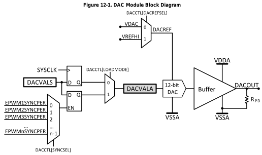
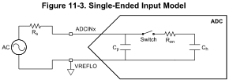
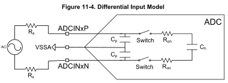
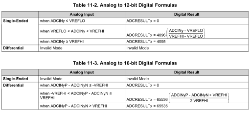
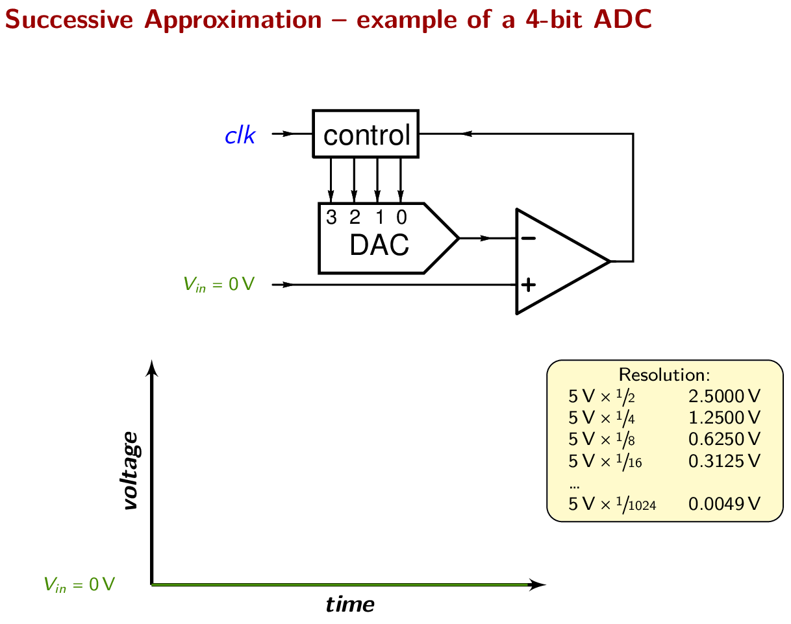
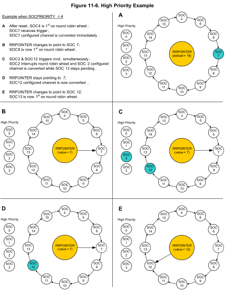

1. SE 423: Introduction to MechatronicsLecture 5: DAC & ADCMarius Juston
Wednesday, February 4th 2026
Lecture notes
This is the title slide for SE 423, Introduction to Mechatronics, Lecture 5: DAC and ADC, presented by Marius Juston on Wednesday, February 4th, 2026. The University of Illinois Urbana-Champaign logo sits at the top, over a dark blue background with faint hand-drawn math sketches.
Today covers how the Red Board crosses between the digital and analog worlds. A DAC, a digital-to-analog converter, turns numbers into voltages. An ADC, an analog-to-digital converter, turns sensor voltages into numbers. First, a few reminders.
2. Reminders
Office Hours:
- Monday: 4-6 PM, Neel
- Tuesday: 11-1 PM, Lakshmi
- Tuesday: 1-3 PM, Samuel
- Tuesday: 2-5 PM, Dan & Marius
Lab: Starting Lab 2 this week. This is also a 1-week lab!
Homeworks:
- Check-offs for homework 2 Ex 1 & 2 are due February 17, 5PM (The end of office hours)
- Check-offs for homework 2 Ex 3 & 4 are due February 24, 5PM (The end of office hours)
- Answers and code submissions for homework 2 are due February 17, 9AM
LabVIEW (This week):
- All check-offs for LabVIEW 1 are due February 5, 5PM
LabVIEW will be quickly checked-off at the beginning / end of your lab session.
Lecture notes
This slide lists this week's course reminders: office hours, the lab schedule, homework deadlines and LabVIEW check-offs.
Office hours are Monday 4 to 6 PM with Neel; Tuesday 11 AM to 1 PM with Lakshmi; Tuesday 1 to 3 PM with Samuel; and Tuesday 2 to 5 PM with Dan and Marius.
Lab 2 starts this week, and like Lab 1 it is a one-week lab, so plan to finish it within this week's session.
For homework 2, the slide links to the assignment page. Check-offs for Exercises 1 and 2 are due February 17 at 5 PM, and check-offs for Exercises 3 and 4 are due February 24 at 5 PM. In both cases 5 PM is the end of office hours, so arrive early enough to be checked off. Your written answers and code submissions for homework 2 are due earlier, on February 17 at 9 AM. Do not confuse the 9 AM submission deadline with the 5 PM check-off deadline on the same day.
All check-offs for LabVIEW 1, also linked on the slide, are due this week, on February 5 at 5 PM. The slide notes in red that LabVIEW is checked off quickly at the beginning or end of your lab session, so have it ready when your session starts.
Next, there is time for questions before the lecture moves on to DACs and ADCs.
3. Questions? (1/2)
Homework, Lab, LabVIEW, quiz questions?
Lecture notes
This slide shows the word "Questions?" in large white text on a dark blue background with faint hand-drawn engineering sketches. Below it is the prompt: "Homework, Lab, LabVIEW, quiz questions?"
This is a pause for your questions before new material. It follows the reminders slide, so it is a good time to ask about Lab 2, which is a one-week lab, about the homework 2 check-offs and submissions, or about the LabVIEW 1 check-offs due this week.
Next, the lecture introduces how the microcontroller connects to the continuous real world through the ADC and the DAC.
4. Introduction
In the real world we have continuous signals:
- Temperature
- Sound
- Velocity
- Pressure
- Luminosity
Again, we have the CPU only able to process discrete binary values (0 or 1).
ADC (Analog-to-Digital Converter):
- "The Eyes/Ears." Converts physical signals into numbers the CPU can process.
DAC (Digital-to-Analog Converter):
- "The Hands/Voice." Converts processed numbers back into voltages to drive motors, speakers, etc.
Lecture notes
This slide introduces the lecture's main theme: how a digital processor connects to an analog world. It is text only. It lists five continuous real-world signals: temperature, sound, velocity, pressure and luminosity. It then repeats a point from earlier lectures: the CPU can only process discrete binary values, 0 or 1. Two converters bridge that gap. The ADC, or analog-to-digital converter, is labeled "the eyes and ears" because it turns physical signals into numbers the CPU can process. The DAC, or digital-to-analog converter, is labeled "the hands and voice" because it turns processed numbers back into voltages that drive motors, speakers, and similar devices.
A continuous signal can take any value at any instant. A temperature can be 21.37 degrees, not just 21 or 22. Your F28379D has no way to store "any value." It stores binary words of a fixed length. Conversion therefore always involves two approximations: sampling at discrete times, and rounding to a finite set of levels. The number of levels is set by the converter's resolution, in bits.
Notice the pattern this sets up for the rest of the course. A sensor voltage enters through the ADC, your code filters it or runs a control law on it, and the result goes back out through a DAC or PWM to an actuator. That loop of sense, compute and act is the core of every feedback controller you build on the robot.
As a quick check, ask yourself which converter you need for each of these: reading a microphone, and setting a voltage to a speaker.
Next, we start with the DAC and see how a binary number becomes a proportional voltage, beginning with resolution.
5. DAC(Digital-to-Analog Converter)
Lecture notes
This is a section title slide on an orange background with faint hand-drawn sketches of equations, a cube, a sphere and chemical structures. It reads "DAC" with the subtitle "(Digital-to-Analog Converter)".
In the introduction, the DAC is "the hands and voice" of the system: it turns numbers computed by the CPU back into voltages. Next, you see how a DAC's bit count sets its resolution, how many bits your microcontroller's DAC has, and how an R-2R resistor ladder builds the output voltage.
6. DAC (1/3)
A device that convert binary input number into a proportional analog voltage symbol.
Where represents the resolution, the larger , the more possible subdivision values you can have (the more you have the more expensive it is!)
Where is the reference value you input to be converted.
Specifically for our microcontroller we have,
How many bits of resolution do we have? 12
Lecture notes
This slide gives the basic definition and equation of a DAC. The text says a DAC is a device that converts a binary input number into a proportional analog voltage. The general equation, centered on the slide, is V_out = V_ref * X / 2^N: the output voltage equals the reference voltage times X divided by 2 to the power N. N is the resolution in bits. A larger N gives more possible subdivisions of the output range, and the slide notes that more bits also means a more expensive part. X is the digital value you input to be converted.
Below that is the version for our microcontroller: DACOUT = DACVALA * DACREF / 4096. The output pin voltage equals the value in the DACVALA register times the DAC reference voltage, divided by 4096. The slide then asks how many bits of resolution we have, and the answer is 12, because 4096 = 2^12.
With 12 bits, the input code runs from 0 to 4095, not 4096. So the largest output is 4095/4096 of the reference, slightly below DACREF. The smallest step, one LSB (least significant bit), is DACREF / 4096. For example, with a 3.0 V reference, one step is about 0.73 mV, and a code of 2048 gives 1.5 V.
A common mistake is trying to write 4096 to get the full reference voltage. That value does not fit in a 12-bit register.
Quick check: with a 3.0 V reference, what code gives about 1.0 V? Roughly 1365.
The equation tells you what the DAC outputs. Next, the R-2R resistor ladder shows how a circuit physically produces that voltage.
7. DAC – R-2R resistor ladder
A voltage mode resistor R-2R resistor ladder network.
If the image is still here, I did not have time to make an animation
It produces an analog output voltage from the digital integer composed of bits: (most significant bit, MSB) through bit (least significant bit, LSB).
https://en.wikipedia.org/wiki/Resistor_ladder
Lecture notes
This slide shows how a DAC can actually be built from a resistor network, the R-2R ladder. The title is "DAC – R-2R resistor ladder," and the slide calls it a voltage-mode R-2R resistor ladder network. A small note on the slide reads "If the image is still here, I did not have time to make an animation," so the static schematic stands in for an animation.
The schematic is a horizontal chain of nodes joined by series resistors of value R. The leftmost node connects to ground through a 2R resistor. Each node also connects upward through its own 2R resistor to a digital bit input: a_0 at the grounded left end, then a_1, a_2, and so on through a_(n-1) at the right end, with dots marking the repeated middle stages. The rightmost node is the output V_out. The slide credits Wikipedia's Resistor_ladder page, https://en.wikipedia.org/wiki/Resistor_ladder.
Each bit input is switched to either 0 V (bit = 0) or V_ref (bit = 1). The key property is that the resistance looking left from any node is always R. At the first node, the 2R to ground in parallel with the 2R bit leg gives R. Adding the series R gives 2R again, and that pairs with the next 2R leg, and so on. Because of this symmetry, a bit's contribution is halved at every node it passes on the way to the output.
The output therefore reads V_out = V_ref*(a_(n-1)/2 + a_(n-2)/4 + ... + a_0/2^n), which simplifies to V_out = V_ref*X/2^n. This is the formula from the previous slide, and the slide's text states the same idea: the output comes from the integer X made of bits a_(n-1), the most significant bit (MSB), through a_0, the least significant bit (LSB).
Quick check: with 3 bits, V_ref = 3 V and X = 101 in binary (5), what is V_out? The answer is 3*5/8 = 1.875 V. The design is attractive because it needs only two resistor values, however many bits there are.
One limitation sets up the next slide. The ladder's output resistance is R, so connecting a load pulls V_out down. That is why the next slide adds a buffer amplifier.
8. DAC – Buffered

Pull-down resistor
Lecture notes
This slide shows Figure 12-1 from the TI reference manual, the block diagram of one buffered DAC module on our F28379D. Last slide's R-2R ladder is the conversion core; this slide shows what surrounds it.
Reading left to right: you write your number into a shadow register called DACVALS. That value is copied into the active register DACVALA in one of two ways, chosen by the DACCTL LOADMODE bit. With LOADMODE = 0, the copy happens on the next SYSCLK edge, so the output updates almost immediately. With LOADMODE = 1, the copy waits for an ePWM sync event, EPWM1SYNCPER through EPWMnSYNCPER, selected by DACCTL SYNCSEL. Syncing to the PWM period means the analog output changes at a predictable moment instead of in the middle of a cycle.
DACVALA drives the 12-bit DAC. Its reference voltage, DACREF, is selected by DACCTL DACREFSEL: input 0 is VDAC, input 1 is VREFHI. The output follows the equation on the slide: DACOUT = DACVALA * DACREF / 4096, read as "DACOUT equals DACVALA times DACREF, divided by 4096." For example, with DACREF = 3.0 V and DACVALA = 2048, DACOUT = 1.5 V.
The DAC output then passes through a buffer amplifier powered by VDDA and VSSA, so it can drive a load without the voltage sagging. At the DACOUT pin, a pull-down resistor, R_PD, to VSSA holds the pin at a defined low level instead of letting it float.
A common mistake: with LOADMODE = 1, writing DACVALS does not change the output until the selected PWM sync arrives.
The next slide summarizes these features.
9. DAC (2/3)
Each buffered DAC has the following features:
- 12-bit programmable internal DAC
- Selectable reference voltage source
-
- Internal
- External
- Pull-down resistor on output
- Ability to synchronize with EPWMSYNCPER
MCU DACs include an operational amplifier (Op-Amp) buffer at the output to drive loads (speakers, motor drivers) without dropping voltage due to impedance loading.
EPWMSYNCPER comes from the Time-Base submodule of the EPWM. (For a detailed description of how this signal is generated, refer to the Time-Base submodule chapter of the EPWM).
There are 3 DAC, DACA, DACB, DACC
Lecture notes
This slide summarizes the features of each buffered DAC on the F28379D. A bulleted list says each DAC has a 12-bit programmable internal DAC, a selectable reference voltage source (internal VDAC or external VREFHI), a pull-down resistor on the output, and the ability to synchronize with EPWMSYNCPER. Below the list, the slide explains that MCU DACs include an op-amp buffer at the output, notes that EPWMSYNCPER comes from the ePWM Time-Base submodule, and states that there are three DACs: DACA, DACB and DACC.
These features map directly onto the block diagram from the previous slide. Twelve bits means 2^12 = 4096 output levels. The output is roughly Vout = DACVAL * Vref / 4096. For example, with a 3.0 V reference, each step is about 0.73 mV.
The reference select is the DACREFSEL bit, so the reference you choose sets the full-scale voltage.
The op-amp buffer gives the output a low impedance. Without it, the R-2R ladder's output would sag as soon as a load draws current. Keep in mind that the buffer still supplies only small currents. It can drive a motor driver's input or an amplifier, but never a motor or speaker coil directly.
The pull-down resistor holds the pin at a known 0 V when the output is disabled, instead of letting it float.
Synchronization means the shadow value DACVALS is copied to the active register DACVALA on a PWM period event instead of on the next clock. This lines DAC updates up with your PWM timing.
Quick check: if you write 2048 to the DAC, what fraction of the reference appears at the pin? About half.
The next slide shows where EPWMSYNCPER is generated.
10. DAC – For later reference
![Block diagram: TI ePWM time-base submodule (Figure 15-5). SYSCLK passes through the EPWMCLK prescaler and TBCTL clock prescaler (HSPCLKDIV, CLKDIV) to produce TBCLK, which drives the 16-bit up/down counter TBCTR, with mode set by TBCTL CTRMODE. A comparator against the shadowed period register TBPRD generates CTR equals PRD and resets the counter. When PHSEN is enabled, a sync input loads the phase register TBPHS into the counter. Multiplexers select which counter events drive the sync outputs EPWMxSYNCO and EPWMxSYNCPER.](L5_files/c57b81ea61aa.svg)
Lecture notes
This slide is marked "for later reference." It reproduces Figure 15-5 from the TI technical reference manual, the Time-Base Submodule Signals and Registers of the ePWM. It is here because the previous slide said the buffered DAC can synchronize its updates to EPWMSYNCPER, and this diagram shows where that signal comes from. We study the ePWM in detail in a later lecture.
Start at the bottom left of the diagram. SYSCLK passes through the EPWMCLK prescaler, set by ClkCfgRegs.PERCLKDIVSEL[EPWMCLKDIV]. It then passes through a second clock prescaler, set by TBCTL[HSPCLKDIV] and TBCTL[CLKDIV], to produce TBCLK.
TBCLK drives the 16-bit up/down counter TBCTR, whose counting mode is set by TBCTL[CTRMODE]. At the top, the period register TBPRD has a shadow copy and an active copy, and TBCTL[PRDLD] chooses how the active copy is loaded. A comparator checks the counter against TBPRD and produces the event CTR = PRD, which can reset the counter.
When the switch TBCTL[PHSEN] is enabled, a sync event loads the phase register TBPHS into the counter. That sync event is an OR of several sources: the input EPWMxSYNCI, the software sync TBCTL[SWFSYNC], or the digital compare events DCAEVT1.sync and DCBEVT1.sync.
On the right, multiplexers choose which counter event becomes each output. TBCTL[SYNCOSEL] and TBCTL2[SYNCOSELX] select EPWMxSYNCO from options such as CTR = ZERO, CTR = CMPB, CMPC or CMPD. HRPCTL selects EPWMxSYNCPER from CTR = PRD, CTR = ZERO, or CMPC and CMPD while counting up or down.
You do not need this for basic DAC use. With LOADMODE = 0 the DAC simply updates on the next SYSCLK, which is the setup you see on the next slide.
11. DAC (3/3)
Setup
EALLOW;
DacaRegs.DACCTL.bit.DACREFSEL = 0; // 0 from internal reference, 1 for external
DacaRegs.DACOUTEN.bit.DACOUTEN = 1; // DAC output enabled? (DAC-OUT-EN)
DacaRegs.DACVALS.all = 0; // Clears current output value
DELAY_US(10); // Delay for buffered DAC to power up
EDIS;
Setting
DacaRegs.DACVALS.all = val; // Sets DAC output (only keeps to first 12 bits)
Lecture notes
This slide shows the actual code for using DAC A, in two parts. Under "Setup" is a block of C that runs once at startup. Under "Setting" is a single line you run whenever you want a new output voltage.
The setup block begins with EALLOW and ends with EDIS. Many configuration registers on the F28379D are write-protected. EALLOW unlocks them and EDIS locks them again, so a stray pointer cannot reconfigure a peripheral. Between those two lines are four statements:
1. DacaRegs.DACCTL.bit.DACREFSEL = 0 chooses the reference voltage. Per the comment, 0 selects the internal reference and 1 selects an external one.
2. DacaRegs.DACOUTEN.bit.DACOUTEN = 1 turns on the output buffer, the op-amp from the previous slides, so the voltage actually reaches the pin.
3. DacaRegs.DACVALS.all = 0 clears the output so it starts at zero volts.
4. DELAY_US(10) waits 10 microseconds for the buffered DAC to power up before you use it.
Setting the output is one line: DacaRegs.DACVALS.all = val. Only the lowest 12 bits of val are kept. That means the useful range is 0 to 4095, and the output voltage is roughly Vout = (val / 4096) * Vref.
A common mistake is writing a value larger than 4095 and expecting the DAC to saturate. Instead, the extra bits are dropped and the output wraps to a low value. Clamp val to the range 0 to 4095 first.
Quick check: with a 3.0 V reference, what val gives about 1.5 V? (About 2048.)
Next, you go the other direction, turning an analog voltage back into a number with the ADC.
12. ADC(Analog-to-Digital Converter)
Lecture notes
This section title slide reads "ADC" with the subtitle "(Analog-to-Digital Converter)" on the orange Grainger Engineering background with faint hand-drawn equations and sketches.
You have just seen how the DAC turns a 12-bit number into a voltage. Now you go the other direction: the ADC measures a continuous voltage, such as a sensor output, and turns it into a number your code can use. Next, you see the three steps every conversion follows: sample, hold, and quantize.
13. ADC (1/4)
Converts continuous voltage into discrete digital numbers.
3 step process:
- Sample: A switch closes, charging a tiny internal capacitor to match the input voltage
- Holding: The switch open, trapping the charge on the capacitor so it does not change during measurement
- Quantizing: The ADC circuitry measures the stored charge against a reference

Lecture notes
This slide introduces the analog-to-digital converter, the mirror image of the DAC you just set up. Where the DAC turns a number into a voltage, the ADC converts a continuous voltage into a discrete digital number. The slide lists a three-step process and shows Figure 11-3 from the TI manual, the single-ended input model.
The figure shows an AC signal source in series with its source resistance, R sub s, wired to the ADC input pin ADCINx. The source's return goes to the VREFLO pin, which is grounded. Inside the ADC block, a parasitic capacitance C sub p sits across the input. A sampling switch with on-resistance R sub on then connects the input to a small hold capacitor, C sub h.
In the first step, sample, the switch closes and C sub h charges until it matches the input voltage. In the second step, hold, the switch opens and traps that charge, so the value does not change while it is being measured. In the third step, quantize, the converter compares the stored voltage against a reference and produces a number. On this chip the reference is the span from VREFLO to VREFHI.
The figure is really an RC circuit. The capacitor charges through R sub s plus R sub on, so it needs time to settle. If your sensor has a large source resistance, or you sample too quickly, C sub h never reaches the true voltage and your readings come out low. Keep that in mind: it is the reason for the acquisition window setting you will see in the SOC slides later.
Quick check: what happens to a reading if you double R sub s but keep the same acquisition time? Next, we look at the features of the F28379D's ADCs.
14. ADC (2/4)
Each ADC has the following features:
- Selectable resolution of 12 bits or 16 bits ( for the precision you want)
- Ratiometric external reference set by VREFHI and VREFLO pins
- Differential signal conversions (16-bit mode only)
- Single-ended signal conversions (12-bit mode only)
- Input multiplexer with up to 16 channels (single-ended) or 8 channels (differential)
- 16 configurable SOCs ( we will go through what this is a bit later)
- 16 individually addressable result registers
Lecture notes
This slide is a text list titled "ADC" that summarizes the features each analog-to-digital converter on the F28379D provides. The previous slide covered how one conversion works: sample, hold, quantize. Now you see what the hardware gives you to manage many conversions.
First, resolution is selectable at 12 or 16 bits. A 12-bit result runs from 0 to 4095 counts, and a 16-bit result runs from 0 to 65535, so 16 bits divides the same voltage range into finer steps.
Second, the reference is ratiometric and external, set by the VREFHI and VREFLO pins. Ratiometric means the result is a fraction of the reference span. In 12-bit single-ended mode that is result = 4095*(Vin - VREFLO)/(VREFHI - VREFLO). If the reference drifts, your readings drift with it.
Resolution and input mode are tied together. Differential conversions, which measure the difference between two pins, work only in 16-bit mode. Single-ended conversions, which measure one pin against VREFLO, work only in 12-bit mode. A common mistake is expecting a 16-bit single-ended reading. That combination is not available.
The input multiplexer selects one of up to 16 single-ended channels or 8 differential pairs. The converter samples one channel at a time and switches between them.
Finally, each ADC has 16 configurable SOCs, or start-of-conversion slots, and 16 individually addressable result registers, one per SOC. The SOCs get their own section later in this lecture.
Next, you see what can trigger these conversions.
15. ADC (3/4)
Each ADC has the following features:
- Multiple trigger sources
-
- S/W - software immediate start
- All ePWMs - ADCSOC A or B
- GPIO XINT2
- CPU Timers 0/1/2 (from each C28x core present)
- ADCINT1/2
- Four flexible PIE interrupts
- Burst mode
- Four post-processing blocks, each with:
-
- Saturating offset calibration
- Error from setpoint calculation
- High, low, and zero-crossing compare, with interrupt and ePWM trip capability
- Trigger-to-sample delay capture
Lecture notes
This slide continues the ADC feature list from the previous slide. That slide covered resolution, reference, and channels. This one covers how a conversion gets started and what the hardware can do with the result. The slide is a bulleted list with four main items, two of which have sub-lists.
The first item is multiple trigger sources. A trigger is the event that tells the ADC to begin sampling. The listed sources are:
1. S/W, meaning software: your code writes a register and the conversion starts immediately.
2. Any ePWM module, through its ADCSOC A or ADCSOC B output.
3. The external GPIO interrupt XINT2.
4. CPU Timers 0, 1 and 2, from each C28x core present on the chip.
5. ADCINT1 or ADCINT2, so one finished conversion can kick off the next.
The second item is four flexible PIE interrupts. Each ADC can raise up to four interrupts, ADCINT1 to ADCINT4, through the Peripheral Interrupt Expansion (PIE) block. That lets the CPU know when results are ready.
The third item is burst mode. In burst mode, a single trigger launches a whole group of conversions instead of just one.
The fourth item is four post-processing blocks. These do simple math on results in hardware, without CPU time. Each block offers:
1. Saturating offset calibration: it subtracts an offset and clamps the result instead of letting it wrap around.
2. Error from setpoint calculation: it subtracts a reference value.
3. High, low, and zero-crossing compare: these can raise an interrupt or even trip an ePWM, which is useful for overcurrent protection.
4. Trigger-to-sample delay capture: it records how long the sample waited after its trigger.
Why does the trigger matter so much? Digital filters and controllers assume samples are evenly spaced in time. Triggering from an ePWM or a CPU timer gives an exact, fixed sample rate. Triggering from software inside a loop gives jitter. In lab you will trigger the ADC from an ePWM, as the single-conversion example later in this lecture shows.
Quick check: if you want 1 kHz sampling, which trigger source would you choose, and why not software?
16. ADC (4/4)
Not every channel may be pinned out from all ADCs. Check the datasheet for your device to
determine which channels are available!
Lecture notes
This slide maps the Red Board's analog pins. A warning at the top says not every channel is pinned out from every ADC, so check the datasheet for your device to see which channels are available. Below it is a table titled "ADC and DAC LaunchPad Pins."
The left column is header J3. Pin 23 (J3.3) is ADCIN14. Pin 24 is ADCINC3, pin 25 is ADCINB3, and pin 26 is ADCINA3, which is joystick Y. Pin 27 is ADCINC2, pin 28 is ADCINB2, and pin 29 is ADCINA2, which is joystick X. Pin 30 is ADCINA0, shared with DAC A.
The column continues with header J7. Pin 63 is ADCIN15. Pin 64 is ADCINC5, pin 65 is ADCINB5, pin 66 is ADCINA5, and pin 67 is ADCINC4. Pin 68 is ADCINB4, which is the microphone. Pin 69 is ADCINA4, and pin 70 is ADCINA1, shared with DAC B.
Most of these pins are also comparator inputs, named CMPINxP or CMPINxN. On the right, header J21 pins 1, 3, 5 and 7 carry ADCIND0 through ADCIND3. ADCIND4 and ADCIND5 go to solder BNC connectors.
Read a channel name like this: "ADCINB4" means ADC module B, input 4. Each of the four ADCs (A, B, C and D) has its own multiplexer, so you must configure the correct module, not just the correct number. ADCIN14 and ADCIN15 have no letter because they are shared inputs that the F2837xD routes to all of the ADC modules.
Notice the DAC A and DAC B outputs sit on ADCINA0 and ADCINA1. You can therefore loop a DAC output back into the ADC to test the conversions you set up. Also notice that channels come in neighbouring pairs, such as A2 and A3. That pairing matters on the next slide, where we look at differential mode.
Quick check: which ADC module and channel would you configure to read the microphone?
17. ADC - Differential
The ADC supports two signal modes: single-ended and differential.
- In single-ended mode, the input voltage to the converter is sampled through a single pin (ADCINx), referenced to VREFLO.
- In differential signaling mode, the input voltage to the converter is sampled through a pair of input pins, one of which is the positive input (ADCINxP) and the other is the negative input (ADCINxN). The actual input voltage is the difference between the two (ADCINxP – ADCINxN).
- Differential signaling mode is advantageous because noise encountered on both inputs will be largely cancelled. Allowing for higher 16-bit precision.

Lecture notes
This slide introduces the two signal modes of the F28379D ADC: single-ended and differential. It has two bullets of definitions, a bullet on why differential helps, and two circuit figures from the TI reference manual.
The left figure, "Single-Ended Input Model," shows an AC source with series source resistance R_s feeding pin ADCINx. The source's return goes to pin VREFLO, which is grounded. Inside the ADC, a parasitic capacitance C_p sits across the input. A sampling switch with on-resistance R_on then connects the input to a hold capacitor C_h, which charges to the input voltage while the switch is closed. The converted value is measured relative to VREFLO.
The right figure, "Differential Input Model," shows the AC source driving two pins, ADCINxP and ADCINxN, each through its own R_s. Each line has its own C_p to VSSA, the analog ground. Each line then passes through its own switch and R_on to opposite ends of a single hold capacitor C_h. C_h therefore stores the difference, V_in = ADCINxP − ADCINxN, read as "positive input minus negative input."
The key idea is common-mode rejection. Noise that couples equally onto both wires, such as ground bounce or interference picked up along a cable, appears in both terms and largely subtracts out. With that noise removed, it becomes worthwhile to resolve more bits, which is why the 16-bit mode is tied to differential inputs.
A common mistake is assuming you can run a single-ended sensor in 16-bit mode. On this part, 16-bit mode is differential only, and 12-bit mode is single-ended only. Signals like the joystick and microphone from the previous pin table are single-ended inputs.
The next slide gives the exact conversion formulas for each mode.
18. ADC - Calculate

Lecture notes
This slide gives the formulas that turn an input voltage into the number the ADC stores in its result register. It shows two tables from the TI technical reference manual.
Table 11-2, "Analog to 12-bit Digital Formulas," covers single-ended mode; differential is listed as an invalid mode at 12 bits. If ADCIN is at or below VREFLO, ADCRESULT = 0. If ADCIN is at or above VREFHI, ADCRESULT = 4095. In between, ADCRESULT = 4096*(ADCIN - VREFLO)/(VREFHI - VREFLO): four thousand ninety-six times the input above the low reference, divided by the reference span.
Table 11-3, "Analog to 16-bit Digital Formulas," covers differential mode only; single-ended is invalid at 16 bits. If ADCINP - ADCINN is at or below negative VREFHI, the result is 0. If it is at or above VREFHI, the result is 65535. In between, ADCRESULT = 65536*(ADCINP - ADCINN + VREFHI)/(2*VREFHI). Adding VREFHI shifts the signed difference so it starts at zero, and the span is 2*VREFHI wide. A zero difference therefore lands at mid-scale, 32768.
Here is a worked example, assuming VREFLO = 0 V and VREFHI = 3.0 V. A 1.5 V input gives 4096*1.5/3.0 = 2048. Each count is 3.0/4096, about 0.73 mV. To go back to volts in your code, multiply the result by 3.0/4096.0.
Two common mistakes come up here. First, in C the expression 3/4096 uses integer division and evaluates to 0, so write the constants as floats. Second, voltages beyond the reference limits clip at 0 or full scale; they do not wrap around.
So far these formulas only say what number comes out. Next we look at how the hardware actually finds that number, using successive approximation.
19. ADC – SAR (Successive Approximation Register) (1/2)
F28379D uses SAR. It works like a "binary search”. Convert continuous to digital.
For iteration (where goes from down to ):
- Trial Step: The SAR logic sets the current bit to 1 (tentatively) and all lower bits to 0.
- DAC Output: The internal DAC generates a trial voltage: (Note: This simplifies to testing the half-way point of the remaining search interval).
- Comparison: The analog comparator checks the condition:
- Decision:
- If True: The comparator outputs '1'. The bit remains 1. The trial voltage is kept as part of
- If False: The comparator outputs '0'. The bit is cleared to 0. The trial voltage is discarded.
This process converges logarithmically (because it is binary search). The error at step is strictly bounded by
Lecture notes
This slide explains how the F28379D's ADC turns a continuous voltage into a number. It uses a successive approximation register, or SAR, which works like a binary search on the input voltage.
The slide lists four steps that repeat for each bit i, counting down from the most significant bit, N-1, to bit 0. First, the trial step: the SAR logic tentatively sets bit b_i to 1 and all lower bits to 0. Second, the internal DAC outputs a trial voltage, V_trial = V_accumulated + (V_ref / 2^(N-1-i)) times one half. That is the voltage already kept plus the weight of the current bit, V_ref / 2^(N-i). As the slide's note says, this tests the halfway point of the remaining search interval. Third, an analog comparator checks whether V_in >= V_trial. Fourth, the decision: if true, the comparator outputs 1, b_i stays 1, and the trial voltage becomes the new V_accumulated. If false, b_i is cleared to 0 and that trial voltage is discarded.
The slide notes that the search converges logarithmically. After step i, the error is bounded by V_ref / 2^(N-i). An N-bit result therefore takes only N comparisons: 12 in 12-bit mode, 16 in 16-bit mode.
Here is a quick example with N = 4, V_ref = 3.2 V and V_in = 2.1 V:
1. Bit 3 tests 1.6 V. The input is above it, so the bit is kept.
2. Bit 2 tests 2.4 V. The input is below it, so the bit is cleared.
3. Bit 1 tests 2.0 V. The bit is kept.
4. Bit 0 tests 2.2 V. The bit is cleared.
The result is 1010, which is 10, representing 2.0 V. The error is within 0.2 V.
Check yourself: how many comparisons does a 16-bit SAR need? The next slide animates this same search on a block diagram.
20. ADC – SAR (Successive Approximation Register) (2/2)

https://en.wikipedia.org/wiki/Successive-approximation_ADC
Lecture notes
This slide is a single frame of an animated diagram from the Wikipedia article on successive-approximation ADCs (https://en.wikipedia.org/wiki/Successive-approximation_ADC). It turns the binary-search algorithm from the previous slide into hardware, using a 4-bit example.
The block diagram has a control block driven by a clock, labeled clk. Control sets four DAC bits, numbered 3 down to 0. The DAC output goes to the minus input of a comparator, and the input voltage V_in goes to the plus input. In this frame, V_in is 0 volts. The comparator output feeds back into the control block. Below the diagram is a voltage-versus-time plot that is still empty except for V_in drawn at 0 volts; in the animation, the DAC trial voltage steps toward V_in one clock at a time.
A table on the right lists the weight of each bit for a 5 V reference: 5 V times 1/2 is 2.5 V, 1/4 is 1.25 V, 1/8 is 0.625 V, and 1/16 is 0.3125 V. Continuing to 5 V times 1/1024 gives 0.0049 V, which is the step size of a 10-bit converter. Each extra bit halves the step size.
Here is a worked example with V_in = 3.2 V and four bits:
Bit 3 tries 2.5 V. Since 3.2 > 2.5, the bit is kept.
Bit 2 tries 2.5 + 1.25 = 3.75 V. That is too high, so the bit is cleared.
Bit 1 tries 2.5 + 0.625 = 3.125 V. The bit is kept.
Bit 0 tries 3.125 + 0.3125 = 3.4375 V. The bit is cleared.
The result is binary 1010, which is 10 counts, or 3.125 V. The error is 0.075 V, which is less than one step of 0.3125 V. An N-bit result takes exactly N comparisons.
On the F28379D in 12-bit mode, the step size is VREFHI/4096. If VREFHI is 3 V, that is about 0.73 mV.
Quick check: if you add one bit of resolution, how many extra clock cycles does the conversion need? (Answer: one more comparison.)
Next, we look at how you tell the ADC when to start a conversion and which pin to convert, using Start-of-Conversion configurations, or SOCs.
21. SOC(Start-of-Conversion)
Lecture notes
This section title slide reads "SOC" with the subtitle "(Start-of-Conversion)" on the orange Illinois background with faint hand-drawn equation sketches.
You have just seen how the SAR converter finds one digital value by binary search. That covers how a single conversion happens. This section covers how you tell the F28379D's ADC when to convert, which pin to sample, and for how long. On this chip you configure all of that through SOCs, which the next slides introduce.
22. SOC - Intro
In simple microcontrollers (like Arduino), you usually just say “Read analog value from pin A0 now!”. In more advanced controllers we use SOCs
SOCs is a configuration set that defines what happens, not just when:
You do not configure the ADC directly, you configure “SOC0” “SOC1”, etc…
Each SOC defines:
- Trigger Source: What causes the same? (Timer, Software, ePWM, GPIO).
- Channel: Which pin to sample? (e.g. ADCINA4).
- Acquisition Window (ACQPS): How long to hold the “sample” switch open?
Lecture notes
This slide, titled "SOC - Intro," explains the start-of-conversion idea behind the ADC on our TMS320F28379D. It contrasts two approaches. On a simple microcontroller like an Arduino, you just say "read the analog value from pin A0 now." More advanced controllers use SOCs instead.
An SOC is a configuration set that defines what happens during a conversion, not just when it happens. You do not configure the ADC directly. You configure SOC0, SOC1, and so on, and each SOC is a small recipe the ADC follows.
The slide lists three things each SOC defines:
First, the trigger source: what causes the sample. The slide's "What causes the same?" means "sample." Options are a CPU timer, software, an ePWM, or a GPIO pin.
Second, the channel: which input pin to sample, for example ADCINA4.
Third, the acquisition window, set by the ACQPS field: how long the sample-and-hold switch connects the pin to the internal sampling capacitor before the SAR conversion from the previous slides begins. On this chip the window lasts ACQPS + 1 system clock cycles.
Why bother with this structure? Once an SOC is set up, the hardware samples the right pin at exactly the right moment with no CPU involvement. For example, you can sample motor current in sync with your PWM.
A common mistake is setting ACQPS too short. The capacitor does not fully charge, especially from a high-impedance sensor, and your readings come out wrong or drift.
Next, we look at the trigger sources in detail, and at what happens when several SOCs fire at once.
23. SOC – Trigger Sources (1/2)
The ADC is an event-based machine.
For example, you can set SOC1 to trigger on ePWM1 (for motor currents) and SOC1 to trigger on CPU Timer 2 ( for temperature monitoring)
What to do if multiple triggers arrive at once? We use a Round Robin, to decide which SOC converts first.
You can assign SOCs to have strict priority over others (critical safety loops)
Lecture notes
This slide builds on the idea from the last one that you configure SOCs rather than the ADC itself, and focuses on the first field of every SOC: its trigger source. The slide has text only, no figure.
The key phrase is that the ADC is an event-based machine. It does not convert on its own schedule. It waits for an event, such as an ePWM signal, a CPU timer, a software write or a GPIO edge, and that event starts the conversion defined by a particular SOC.
The slide's example pairs two triggers with two jobs. One SOC triggers on ePWM1 to sample motor currents, so each sample stays synchronized with the PWM switching. Another SOC triggers on CPU Timer 2 for slow temperature monitoring. The slide labels both of these SOC1. The second one should be a different SOC, for example SOC2, because each SOC has exactly one trigger source. Separate SOCs are what let one ADC serve two independent timing needs.
What happens if several triggers arrive at the same moment? The ADC converts one channel at a time, so an arbiter decides the order. By default it uses round robin, a rotating order in which the SOC after the most recently converted one goes first, so no SOC is starved. You can also give some SOCs strict high priority. These always jump the queue, which is useful for critical safety loops like overcurrent protection.
Quick check: if your current-sense SOC must never wait behind a temperature reading, which mechanism do you use? Strict priority. The next slide shows TI's figure of exactly how the priority and round-robin pointer work.
24. SOC – Trigger Sources (2/2)

Lecture notes
This slide reproduces TI's Figure 11-6, "High Priority Example," which works through the round-robin and priority scheme from the previous slide. The setting is SOCPRIORITY = 4, so SOC0 through SOC3 are fixed high-priority SOCs, drawn as a column of circles on the left of each panel. SOC4 through SOC15 sit on a clockwise wheel around a yellow circle labeled RRPOINTER, the round-robin pointer. A teal circle marks the SOC being serviced in each step.
Panel A shows the state after reset. RRPOINTER defaults to 16, which means no round-robin SOC has converted yet, so SOC4 is first on the wheel. SOC7 receives a trigger, and because nothing else is pending, it converts immediately.
Panel B shows that RRPOINTER now holds 7, the last round-robin SOC converted. SOC8 is therefore first in line, and SOC7 has dropped to the back of the wheel. This rotation keeps one channel from hogging the ADC.
Panel C shows SOC2 and SOC12 triggering at the same time. SOC2 is high priority, so it interrupts the wheel and converts first. SOC12 stays pending.
Panel D shows SOC12 converting next. RRPOINTER is still 7, because high-priority conversions never move the pointer.
Panel E shows RRPOINTER updated to 12, so SOC13 is now first.
A common mistake is assuming SOCs always convert in numerical order. Only the high-priority SOCs are ranked strictly. The wheel's order depends on what converted last.
Quick check: if SOC5 and SOC9 trigger together now, which converts first? (SOC5, because counting clockwise from SOC13, SOC5 comes before SOC9.)
Next, we look at how long each SOC samples its channel: the acquisition window.
25. SOC – Acquisition Window
The internal capacitor needs time to charge. If the source impedance is high (weak signal), it takes longer
AdcxRegs.ADCSOCxCTL.bit.ACQPS
ACQPS is a 9-bit register that can be set to a value between 0 and 511, resulting in an acquisition window duration of:
Acquisition Window = .
The acquisition window duration is based on the System Clock (SYSCLK), not the ADC clock (ADCCLK)!
Why it matters: If you make this too short, the capacitor won't fully charge, and you will read the previous channel's "ghost" voltage (cross-talk).
Lecture notes
This slide is titled "SOC – Acquisition Window." The text says the ADC's internal sampling capacitor, C_h (C sub h, the hold capacitor), needs time to charge, and that a high source impedance, meaning a weak signal, makes it take longer. The register field that sets this time is shown in code font: AdcxRegs.ADCSOCxCTL.bit.ACQPS, where x is the ADC module (A through D) and the SOC number. ACQPS is a 9-bit field, so it can be set from 0 to 511. The slide gives the equation: Acquisition Window = (ACQPS + 1) × (SYSCLK cycle time), which reads as the acquisition window equals ACQPS plus one, times the system clock period. It stresses that this time is based on SYSCLK, not the ADC clock ADCCLK. The last line says that if the window is too short, the capacitor won't fully charge, and you read the previous channel's "ghost" voltage, which is cross-talk.
The previous slides covered when an SOC fires and which one goes first. This slide covers what happens next. During acquisition the input switch connects your signal to C_h, and the capacitor charges through the source resistance much like an RC circuit. A larger source resistance gives a slower charge, so a high-impedance source needs a longer window. The capacitor also still holds the voltage from the last channel it sampled. A short window therefore leaves part of that old voltage in your reading.
On the Red Board, SYSCLK is 200 MHz, so one cycle is 5 ns. ACQPS = 19 gives 20 × 5 ns = 100 ns, which is the value you see on the next code slide. The maximum, ACQPS = 511, gives 512 × 5 ns = 2.56 µs. The datasheet also sets a minimum window, which is longer in 16-bit mode than in 12-bit mode, so check it before you pick a value.
A common mistake is computing the window with ADCCLK. Quick check: what ACQPS gives a 1 µs window? The answer is 199, because 200 × 5 ns = 1 µs.
26. SOC – Interrupts
You don’t need an interrupt for every sample ( bit ).
You can set an interrupt to fire only after a sequence (e.g. After SOC3 completes)
Early vs Late Interrupts:
- Early: First the interrupt at the end of acquisition
- Late: At the end of conversion
Lecture notes
This slide covers how the ADC tells the CPU that results are ready. It has two short statements and a two-item list. First: you don't need an interrupt for every sample. The parenthetical after "sample" appears to have lost a symbol or image, so read it simply as "every individual sample." Second: you can set an interrupt to fire only after a sequence completes, for example after SOC3. Under the bold heading "Early vs Late Interrupts," the list reads: Early, fire the interrupt at the end of acquisition; Late, fire it at the end of conversion.
Here is how the sequence interrupt works. Suppose SOC0 through SOC3 all trigger from the same ePWM event. You don't want four interrupts. Instead, set INT1SEL to 3 so that ADCINT1 is tied to SOC3. When it fires, all four results are waiting in the ADCRESULT0 to ADCRESULT3 registers, and one interrupt service routine reads them all. In the code two slides ahead, the comment says it plainly: set INT1SEL to the last SOC that is converted.
Early versus late is chosen by the INTPULSEPOS bit in ADCCTL1, where 0 means early and 1 means late. An early pulse arrives right after the acquisition window you just learned about, while the SAR conversion is still running. It gives your ISR a head start, but the new result is not in the register yet. A late pulse arrives once the result is valid.
Common mistake: you select early, read the result immediately, and get the previous sample. In this course, use late, which is why the upcoming code sets INTPULSEPOS = 1. Also remember to clear the ADCINT1 flag in your ISR so the next interrupt can fire.
Quick check: with SOC0 to SOC3 and late interrupts, how many ISR calls happen per trigger? The answer is one.
27. ADC – Single Conversion from ePWM
AdcaRegs.ADCSOC5CTL.bit.CHSEL = 1; //SOC5 will convert ADCINA1
AdcaRegs.ADCSOC5CTL.bit.ACQPS = 19; //SOC5 will use sample duration of 20 SYSCLK cycles
AdcaRegs.ADCSOC5CTL.bit.TRIGSEL = 10; //SOC5 will begin conversion on ePWM3 SOCB
Lecture notes
The slide shows three lines of C code that configure one start-of-conversion slot, SOC5, on ADC A. Each line writes one bit field of the register AdcaRegs.ADCSOC5CTL and has a comment explaining it. The first line sets CHSEL = 1, so SOC5 converts input pin ADCINA1. The second sets ACQPS = 19, so SOC5 samples for 20 SYSCLK cycles. The third sets TRIGSEL = 10, so SOC5 starts converting when ePWM3 sends its SOCB signal.
This slide puts the last few slides into practice. Every SOC needs three answers: which channel, how long to sample, and what starts it. CHSEL answers the first. ACQPS is the acquisition window from the previous slides. The window is ACQPS + 1 SYSCLK cycles, so the value 19 gives 20 cycles. With the 200 MHz system clock, each cycle is 5 ns, so the window is 100 ns. TRIGSEL answers the third question by choosing ePWM3 SOCB from the trigger source table.
Using an ePWM as the trigger matters because the samples then arrive at an exact, fixed rate set by the timer, not whenever your code happens to run. Fixed-rate sampling is what your digital filters and controllers assume.
Two common mistakes:
First, these registers are protected, so the writes must sit between EALLOW and EDIS.
Second, setting TRIGSEL alone does nothing. ePWM3 must also be configured to actually generate the SOCB event; otherwise the ADC never starts.
Quick check: what ACQPS value gives a 500 ns window? (Answer: 99, which is the value used on the next slide's larger example.)
28. ADC – FFT Code (much more complicated example)
EALLOW; //write configurations for all ADCs ADCB
AdcbRegs.ADCCTL2.bit.PRESCALE = 6; //set ADCCLK divider to /4
AdcSetMode(ADC_ADCB, ADC_RESOLUTION_12BIT, ADC_SIGNALMODE_SINGLE); //read calibration settings
//Set pulse positions to late
AdcbRegs.ADCCTL1.bit.INTPULSEPOS = 1; //power up the ADCs
AdcbRegs.ADCCTL1.bit.ADCPWDNZ = 1;
DELAY_US(1000); //delay for 1ms to allow ADC time to power up
AdcbRegs.ADCSOC0CTL.bit.CHSEL = 4; //SOC0 will convert Channel you choose Does not have to be B0
AdcbRegs.ADCSOC0CTL.bit.ACQPS = 99; //sample window is acqps + 1 SYSCLK cycles = 500ns
AdcbRegs.ADCSOC0CTL.bit.TRIGSEL = 0x11; // EPWM7 ADCSOCA or another trigger you choose will trigger SOC0
AdcbRegs.ADCINTSEL1N2.bit.INT1SEL = 0; //set to last SOC that is converted and it will set INT1 flag ADCB1
AdcbRegs.ADCINTSEL1N2.bit.INT1E = 1; //enable INT1 flag, originally = 1 (need to set to 1 for non-DMA)
AdcbRegs.ADCINTFLGCLR.bit.ADCINT1 = 1; //make sure INT1 flag is cleared
AdcbRegs.ADCINTSEL1N2.bit.INT1CONT = 1; // Interrupt pulses regardless of flag state
EDIS;
Lecture notes
This slide shows a complete configuration block for ADCB, taken from an FFT example. Unlike the three-line snippet on the previous slide, it shows the full ADC setup sequence, and every line has a comment explaining it.
The code starts with EALLOW, because the ADC control registers are protected and cannot be written otherwise, and it ends with EDIS to re-protect them. Between those two lines, the code runs these steps in order:
PRESCALE = 6 divides the clock by 4, so the ADC clock is 200 MHz / 4 = 50 MHz.
AdcSetMode selects 12-bit resolution in single-ended mode and loads the factory calibration for that mode.
INTPULSEPOS = 1 selects late interrupts, so the interrupt fires at the end of conversion, as covered on the interrupts slide.
ADCPWDNZ = 1 powers up the ADC.
DELAY_US(1000) waits 1 ms so the ADC can finish powering up.
Watch the comments here. "Set pulse positions to late" belongs to the INTPULSEPOS line, and "power up the ADCs" belongs to the ADCPWDNZ line below it.
Next, the code configures SOC0:
CHSEL = 4 converts channel ADCINB4. The comment reminds you this can be any channel you choose.
ACQPS = 99 gives an acquisition window of ACQPS + 1 = 100 SYSCLK cycles. At 5 ns per cycle, that is 500 ns.
TRIGSEL = 0x11 (decimal 17) starts the conversion on ePWM7 SOCA, so ePWM7 sets the sample rate for the FFT.
Finally, the code sets up the interrupt:
INT1SEL = 0 makes the end of SOC0 set the ADCB1 flag.
INT1E = 1 enables that flag.
ADCINTFLGCLR clears any stale flag.
INT1CONT = 1 makes the interrupt pulse on every conversion, even if your interrupt service routine missed clearing the flag.
A common mistake in the lab is forgetting to clear ADCINT1 inside your ISR. Quick check: what would you change to sample ADCINB2 with a 1 µs acquisition window?
29. Questions? (2/2)
Lecture notes
This slide shows the word "Questions?" in large white letters on a dark blue background. Faint hand-drawn engineering sketches fill the background, the orange Illinois "I" logo sits in the top right corner, and the footer reads "Systems Engineering" and "Grainger Engineering."
This is the time to ask about anything from today: R-2R DACs, SAR conversion, start-of-conversion triggers, acquisition windows, or the ePWM-triggered ADC and FFT code. As a quick check, can you explain why ACQPS = 99 gives a 500 ns sample window?
30. End of Lecture 5
Lecture notes
This closing slide is the Grainger College of Engineering title card: an orange background with the University of Illinois block I logo and the words "The Grainger College of Engineering, University of Illinois Urbana-Champaign." Faint hand-drawn equations, a cube, a sphere and chemical structures fill the background as decoration.
This ends Lecture 5. You have covered DACs, ADCs and SAR conversion, and how start-of-conversion triggers, acquisition windows and interrupts let the ePWM timer drive ADC sampling on the Red Board.